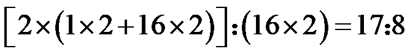

2023年北京中考化学 第14题 解析
14. 下列关于 的说法正确的是
的说法正确的是
A. 该反应属于置换反应
B. 该反应前后分子的个数不变
C. 生成的 与
与 的分子个数比为
的分子个数比为
D. 参加反应的 与生成的的质量比为
与生成的的质量比为
【答案】C
【解析】
【详解】A.置换反应是单质与化合物反应生成另外的单质和化合物的化学反应，是化学中四大基本反应类型之一，该反应不符合此形式，A错误，不符合题意；
B.反应前有2个过氧化氢分子，反应后有2个水分子和1个氧分子，共3个分子，化学反应前后分子个数改变，B错误，不符合题意；
C.由化学方程式可知生成的 H2O 与 O2 的分子个数比为 2:1，C正确，符合题意；
D.参加反应的 H2O2 与生成的 O2 的质量比=

，D错误，不符合题意；故选C。